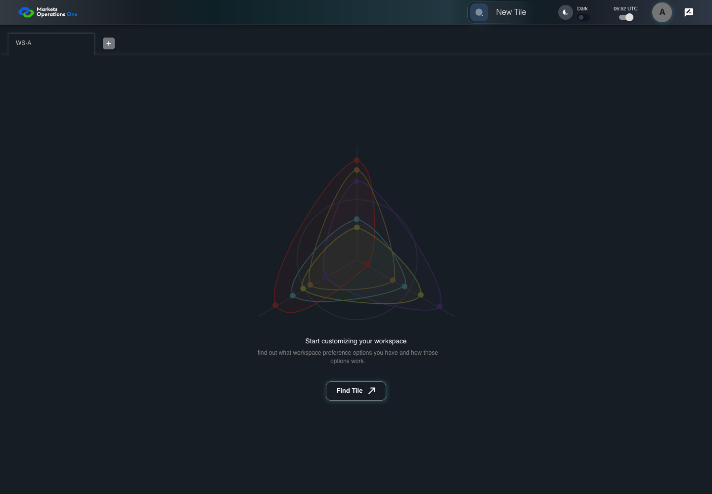

KNOW-007 actual current BFF catalog eligibility
FAIL · application/run-073/know-007-actual-current-bff-catalog-eligibility-2dd8f0ce92a3-attempt-1 · ACTUAL_APPLICATION_LOCAL_SERVICES
Actual MFE and current single-ui-bff auth controller, AdminModuleUtil catalog filtering, AuthFilterExecutor, PostgreSQL18.4 with exact migrations, and JPA repositories. Synthetic local OUD identity Alice and controlled EMS2 entity response. External EMS3 adapter disabled; isolated Spring Boot3 bootstrap replaces production Boot4 configuration. KNOW014 records the missing shell open-authorization operation. KNOW015/017 use proposed URL navigation overlays because canonical targets remain undefined. No protected tenant fields, denial states, or production provider acceptance are fabricated.
2026-10-22T06:52:05.208Z to 2026-10-22T06:52:14.249Z
Assertions and result · Artifact manifest · Exact run inputs and source hashes
Result SHA-256:ce17110b0cc844e43b8388d7a1df15d2f6ef422760d50f51232e615f8832f85fRetained failure details
[
{
"message": "Error: \u001b[2mexpect(\u001b[22m\u001b[31mlocator\u001b[39m\u001b[2m).\u001b[22mtoHaveCount\u001b[2m(\u001b[22m\u001b[32mexpected\u001b[39m\u001b[2m)\u001b[22m failed\n\nLocator: getByTestId('MicroWebUI_base_home').getByRole('tablist', { name: 'workspaces', exact: true })\nExpected: \u001b[32m0\u001b[39m\nReceived: \u001b[31m1\u001b[39m\nTimeout: 5000ms\n\nCall log:\n\u001b[2m - Expect \"toHaveCount\" getByTestId('MicroWebUI_base_home').getByRole('tablist', { name: 'workspaces', exact: true }) with timeout 5000ms\u001b[22m\n\u001b[2m - waiting for getByTestId('MicroWebUI_base_home').getByRole('tablist', { name: 'workspaces', exact: true })\u001b[22m\n\u001b[2m 14 \u00d7 locator resolved to 1 element\u001b[22m\n\u001b[2m - unexpected value \"1\"\u001b[22m\n",
"stack": "Error: \u001b[2mexpect(\u001b[22m\u001b[31mlocator\u001b[39m\u001b[2m).\u001b[22mtoHaveCount\u001b[2m(\u001b[22m\u001b[32mexpected\u001b[39m\u001b[2m)\u001b[22m failed\n\nLocator: getByTestId('MicroWebUI_base_home').getByRole('tablist', { name: 'workspaces', exact: true })\nExpected: \u001b[32m0\u001b[39m\nReceived: \u001b[31m1\u001b[39m\nTimeout: 5000ms\n\nCall log:\n\u001b[2m - Expect \"toHaveCount\" getByTestId('MicroWebUI_base_home').getByRole('tablist', { name: 'workspaces', exact: true }) with timeout 5000ms\u001b[22m\n\u001b[2m - waiting for getByTestId('MicroWebUI_base_home').getByRole('tablist', { name: 'workspaces', exact: true })\u001b[22m\n\u001b[2m 14 \u00d7 locator resolved to 1 element\u001b[22m\n\u001b[2m - unexpected value \"1\"\u001b[22m\n\n at /Users/lushevol/code/github/ratan-release-impact/workbench/e2e/audit-specs/knowledge-current-bff.spec.ts:55:137\n at AuditCapture.step (/Users/lushevol/code/github/ratan-release-impact/workbench/e2e/support/audit-fixture.ts:94:21)\n at /Users/lushevol/code/github/ratan-release-impact/workbench/e2e/audit-specs/knowledge-current-bff.spec.ts:33:26",
"location": {
"file": "/Users/lushevol/code/github/ratan-release-impact/workbench/e2e/audit-specs/knowledge-current-bff.spec.ts",
"column": 137,
"line": 55
},
"snippet": " 53 | if(step.text.includes('clicks the button labeled \"Sign In\"')){await login.clickSignInButton();await expect.poll(()=>loginSettled).toBe(true);await page.waitForLoadState('networkidle');return;}\n 54 | if(step.text.includes('clicks the text \"New Tile\"')){await portal.expectVisible();await portal.root.getByTestId(`${localPrefix}_new_tile`).click();return;}\n> 55 | if(step.text.includes('authenticated portal workspace is absent')){expect(loginSettled).toBe(true);await expect(portal.workspaceList).toHaveCount(0);return;}\n | ^\n 56 | if(step.text.includes('no content from T-TRADE')){for(const title of ['T-TRADE','T-CASH','T-REPORT'])await expect(page.getByText(title,{exact:true})).toHaveCount(0);return;}\n 57 | if(step.text.includes('panel headed by \"Tile Options\" is visible')){await expect(drawer.getByText('Tile Options',{exact:true})).toBeVisible();return;}\n 58 | const count=/contains exactly (\\d+) occurrences of tile title text \"([^\"]+)\"/.exec(step.text);"
}
]Machine observations
- actual-catalog-seed.json
e19f40c091364bd1c22b95586dfa1b253273b2ff1081825244f54e8c4ace42bc - actual-filtered-login.json
4fca9a89595020011ab11f5d7946ef30d2d93d39852deda8c67d76c3deb766f3 - controlled-ems2-input.json
217959d64564d564e517b8fb194a5e2f55e6df416eaabf020f894481cf3d3490
Screenshot capture: CAPTURED. Named frames: 12.
Step screenshot evidence: INCOMPLETE. 11/12 canonical steps have execution screenshots.
Step 12 has no screenshot from an executed step.
Canonical step timeline
Given Alice uses an isolated browser profile with the synthetic identity and permissions defined for this case
Execution: PASSED.
1. step-01 Visible state after step 1: Given Alice uses an isolated browser profile with the synthetic identity and permissions defined for this case
2026-10-22T06:52:06.516Z · 1440×1000
Step: /Users/lushevol/code/github/ratan-release-impact/workbench/tasks/ui-test-coverage-20261022/test-cases.md:10756
SHA-256:99567bb3808af958792a6b38879d848938c08b417fb7dfff75bde75fcbd51a3aAnd the synthetic catalog uses exact tile titles "T-TRADE", "T-CASH", and "T-REPORT"
Execution: PASSED.
2. step-02 Visible state after step 2: And the synthetic catalog uses exact tile titles "T-TRADE", "T-CASH", and "T-REPORT"
2026-10-22T06:52:06.853Z · 1440×1000
Step: /Users/lushevol/code/github/ratan-release-impact/workbench/tasks/ui-test-coverage-20261022/test-cases.md:10757
SHA-256:99567bb3808af958792a6b38879d848938c08b417fb7dfff75bde75fcbd51a3aAnd T-TRADE requires entity "E-TRADE" and subject "S-VIEW"
Execution: PASSED.
3. step-03 Visible state after step 3: And T-TRADE requires entity "E-TRADE" and subject "S-VIEW"
2026-10-22T06:52:07.188Z · 1440×1000
Step: /Users/lushevol/code/github/ratan-release-impact/workbench/tasks/ui-test-coverage-20261022/test-cases.md:10758
SHA-256:99567bb3808af958792a6b38879d848938c08b417fb7dfff75bde75fcbd51a3aAnd T-CASH requires entity "E-CASH" and subject "S-VIEW"
Execution: PASSED.
4. step-04 Visible state after step 4: And T-CASH requires entity "E-CASH" and subject "S-VIEW"
2026-10-22T06:52:07.506Z · 1440×1000
Step: /Users/lushevol/code/github/ratan-release-impact/workbench/tasks/ui-test-coverage-20261022/test-cases.md:10759
SHA-256:99567bb3808af958792a6b38879d848938c08b417fb7dfff75bde75fcbd51a3aAnd T-REPORT permits entities "E-RR-A" and "E-RR-B" with an empty subject
Execution: PASSED.
5. step-05 Visible state after step 5: And T-REPORT permits entities "E-RR-A" and "E-RR-B" with an empty subject
2026-10-22T06:52:07.733Z · 1440×1000
Step: /Users/lushevol/code/github/ratan-release-impact/workbench/tasks/ui-test-coverage-20261022/test-cases.md:10760
SHA-256:99567bb3808af958792a6b38879d848938c08b417fb7dfff75bde75fcbd51a3aAnd Alice has entity "E-UNREGISTERED" only
Execution: PASSED.
6. step-06 Visible state after step 6: And Alice has entity "E-UNREGISTERED" only
2026-10-22T06:52:07.924Z · 1440×1000
Step: /Users/lushevol/code/github/ratan-release-impact/workbench/tasks/ui-test-coverage-20261022/test-cases.md:10761
SHA-256:99567bb3808af958792a6b38879d848938c08b417fb7dfff75bde75fcbd51a3aAnd the controlled login deployment enables the local Username and Password form
Execution: PASSED.
7. step-07 Visible state after step 7: And the controlled login deployment enables the local Username and Password form
2026-10-22T06:52:08.135Z · 1440×1000
Step: /Users/lushevol/code/github/ratan-release-impact/workbench/tasks/ui-test-coverage-20261022/test-cases.md:10762
SHA-256:99567bb3808af958792a6b38879d848938c08b417fb7dfff75bde75fcbd51a3aWhen Alice fills the textbox with placeholder "Enter Username" with "alice" on the Sign In page
Execution: PASSED.
8. step-08 Visible state after step 8: When Alice fills the textbox with placeholder "Enter Username" with "alice" on the Sign In page
2026-10-22T06:52:08.338Z · 1440×1000
Step: /Users/lushevol/code/github/ratan-release-impact/workbench/tasks/ui-test-coverage-20261022/test-cases.md:10763
SHA-256:7703fa3e0bc5f914369d1ff902654961f3cc3544f781f87c33d15b7a56e2b2fbAnd Alice fills the text input with placeholder "Enter Password" with the fixture password on the Sign In page
Execution: PASSED.
9. step-09 Visible state after step 9: And Alice fills the text input with placeholder "Enter Password" with the fixture password on the Sign In page
2026-10-22T06:52:08.541Z · 1440×1000
Step: /Users/lushevol/code/github/ratan-release-impact/workbench/tasks/ui-test-coverage-20261022/test-cases.md:10764
SHA-256:34651da22b478be26d70d709f0d760cf43ef290bb1b17c0faa988ee4913d1e84And Alice clicks the button labeled "Sign In" on the Sign In page
Execution: PASSED.
10. step-10 Visible state after step 10: And Alice clicks the button labeled "Sign In" on the Sign In page
2026-10-22T06:52:08.766Z · 1440×1000
Step: /Users/lushevol/code/github/ratan-release-impact/workbench/tasks/ui-test-coverage-20261022/test-cases.md:10765
SHA-256:870deec999809b3c9a4c967122ffa8cba98d5963ead280986c01b8b50c5b6444Then the authenticated portal workspace is absent after the sign-in response settles
Execution: FAILED.
11. step-11-failure Visible state when step 11 failed. Later steps did not execute.
2026-10-22T06:52:13.834Z · 1440×1000
Step: /Users/lushevol/code/github/ratan-release-impact/workbench/tasks/ui-test-coverage-20261022/test-cases.md:10766
SHA-256:dba19d57a342ef1a18510f76f121961c6c438abb629401f16ad60137a3e6cfd9And no content from T-TRADE, T-CASH, or T-REPORT is visible
Execution: NOT_EXECUTED.No screenshot is recorded for this step. No executed state is claimed.
Additional named frames

The visible state when the test failed.
2026-10-22T06:52:13.909Z · 1440×1000Step: Test source: /Users/lushevol/code/github/ratan-release-impact/workbench/e2e/audit-specs/knowledge-current-bff.spec.ts:26
SHA-256:
dba19d57a342ef1a18510f76f121961c6c438abb629401f16ad60137a3e6cfd9Screenshots establish visible state only. Assertions and traces support functional claims.